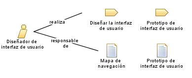

| Rol: Diseñador de interfaz de usuario |
|
 |
| Este rol coordina el diseño de la interfaz de usuario. Esto incluye recopilar los requisitos de utilización y los diseños de interfaz de usuario candidata a la creación de prototipos para cumplir estos requisitos. |
| Conjuntos de roles: Desarrolladores |
|
Relaciones
 |
| Modifica |
|
| Uso del proceso |
|
Descripción principal
|
Este rol de interfaz de usuario no es responsable de implementar la interfaz de usuario. En cambio, este rol se centra
en el diseño y la "forma visual" de la interfaz de usuario:
-
capturando requisitos de la interfaz de usuario, incluyendo los requisitos de utilización
-
construyendo prototipos de interfaz de usuario
-
implicando a otros interesados de la interfaz de usuario, como los usuarios, en revisiones de utilización y
sesiones de prueba de uso
-
revisando y proporcionando la información de retorno apropiada en la implementación final de la interfaz de
usuario, tal como la crean otros desarrolladores; es decir, diseñadores e implementadores.
|
Personal
| Habilidades |
El diseñador de interfaz de usuario puede provenir de un contexto creativo o de artes visuales en lugar de un contexto
empresarial, de ingeniería o de ciencias informáticas. El diseñador de interfaz de usuario se centra en la utilización
del sistema.
|
| Propuestas de asignación |
Especialmente en proyectos grandes, se suele formar un grupo separado de personas en que todos desempeñan el rol de
diseñador de interfaz de usuario. Este grupo se centra básicamente en la interfaz de usuario y los aspectos de
utilización del sistema. Esto es importante por los motivos siguientes:
-
las habilidades necesarias por parte del diseñador de interfaz de usuario a menudo deben mejorarse y optimizarse
para el proyecto actual y el tipo de aplicación, con requisitos de utilización potencialmente únicos, y esto
requiere tiempo y dedicación
-
el riesgo de "obediencias mezcladas" debe delimitarse; es decir, el diseñador de interfaz de usuario debe estar más
influenciado por las consideraciones de utilización que por las consideraciones de implementación
|
Más información
© Copyright IBM Corp. 1987, 2006. Reservados todos los derechos.
|
|